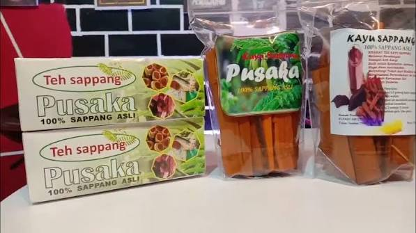

Sektor Perairan
2. Perikanan Darat
Budidaya Perikanan Air Tawar
Didukung oleh aliran sungai seperti di Dusun Sekadim dan potensi Sungai Sebangkau, warga mengembangkan sektor perikanan darat melalui kelompok pembudidaya ikan (Pokdakan).

Ekonomi Kreatif
3. Inovasi UMKM & Produk Lokal
Teh Herbal Kayu Sappang
Melalui Badan Usaha Milik Desa (Bumdes) Berkat Hakikat Pusaka, desa ini berinovasi mengolah kayu seppang/sappang menjadi produk teh herbal kesehatan untuk mendongkrak ekonomi UMKM.